<style>
* {box-sizing: border-box}
body {font-family: Verdana, sans-serif; margin:0}
.mySlides {padding-left: ;
  padding-right: 4em;}
img {vertical-align: middle;}
h2.sub-head{
  color: #000 !important;
  font-size: 22px !important;
  font-weight: 400 !important;
  margin-top: 3em;
}
.list-style{
  padding-left: 2em;
}
h4, span.strong{
  font-weight: bold !important;
}
/* On smaller screens, decrease text size */
@media only screen and (max-width: 300px) {
  .prev, .next,.text {font-size: 11px}
}
.back-container{
  margin-top: 4em;
  width: 80%;

}
.case-studies-back-button{
  text-decoration: none; padding: .5em; border-radius: 7px; font-size: 15px; color: #000; background-color: ; padding: 1em; border:1px solid #000;
}
</style>
<header id="home-header" style="background-image: url({{ site.baseurl }}{{ site.sidebar_image }});">
  <div class="top-container" >
    <div class="container" style="top:50% !important;">
       <div class="style-element">
        <!--<br><br>
        <!---->
          <h1 style="font-family:lobster">{{ site.title }} <span style="display: none;" class="mobile-title"> &middot; Sr/Lead UX </span></h1>
          <h3 class="style mobile-header" style="margin-bottom: 1em; font-size: 20px;"> Principal UX & Product Designer</h3>
          <h3 class="style">
            <a href="index.html" class="side-menu"> Home</a> 
            <a href="profile.html" class="side-menu"> About</a>
           <a href="about.html" class="side-menu"> Skills</a>
           <a href="case-studies.html" class="side-menu active"> Projects</a>
            <a href="https://www.jmcleod.me/images/Resume.pdf" target="_blank" class="side-menu"> Resume</a>
            <!--<a href="#" > Contact Me</a><br>-->
          </h3>
        </div>
    </div>
  </div>
  
</header>
<article>
  <div class="container">
     <div class="portfolio content" >
        <h2 class="posts" style="color: #000 !important;">Salesforce SBR Case Study</h2>
        <hr>
        <h2 class="sub-head">Overview</h2>
          <p>
            I led the redesign of Salesforce’s workflow to address inefficiencies caused by fragmented systems, manual data entry, and limited pipeline visibility. Through user research, journey mapping, and close collaboration with Sales Ops and Engineering, I designed a unified 360° customer view, automated renewal triggers, and streamlined CPQ processes. The solution reduced renewal time by 30%, improved forecasting accuracy, and positioned Salesforce as the primary tool for sales reps to manage their workflows.
          </p>
          <div class="portfolio-images content-child">
            <div class="mySlides">
              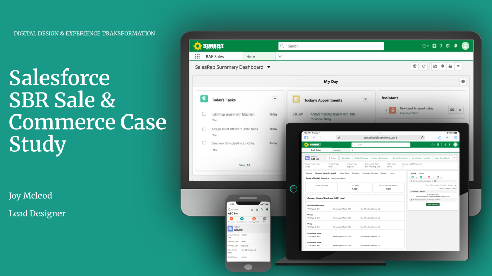
              <p>&nbsp;</p>
            </div>
          </div>
          <div class="content-child">
            <h2 class="sub-head">The Problem</h2>
            <div class="mySlides">
              
            </div> <br>
           <!-- <h2 class="sub-head">The Solution</h2>
              <p>
                I led the design of a Salesforce-based solution that consolidated data from distributed sources into a unified interface. Key features included:
                <ul class="list-style">
                  <li><strong>360° Customer Dashboard:</strong> A single view showing customer history, product usage, and recommended upsell/cross-sell opportunities.</li>
                  <li><strong>Responsive, Scalable Design:</strong> Optimized for both desktop and mobile, ensuring access in the field.</li>
                  <li><strong>Guided Learning Resources:</strong> Embedded micro-learning modules to help sales reps understand product lines and recommend the right solutions.</li>
                  <li><strong>Modernized Processes:</strong> Streamlined workflows with automation and real-time data synchronization across lines of business.</li>
                </ul>
              </p>-->
            <h2 class="sub-head">Roles & Responsibilities:</h2>
            <ul class="list-style">
              <li>UX Design Lead, Research & Strategist</li>
              <li>Wireframing & Prototyping</li>
              <li>Usability Testing</li>
              <li>Design System Implementation</li>
            </ul>
            <h2 class="sub-head">My UX Process</h2>
            <p>
              In order to create a well-defined User Experience (UX) process to ensure that products are user-centered, intuitive, and effective. I incorporated strategy, research, design, testing, and iteration. Below is a breakdown of the Strategy and Research phases, which lay the foundation to the success of this initiative.
            </p>
            <div class="mySlides">
              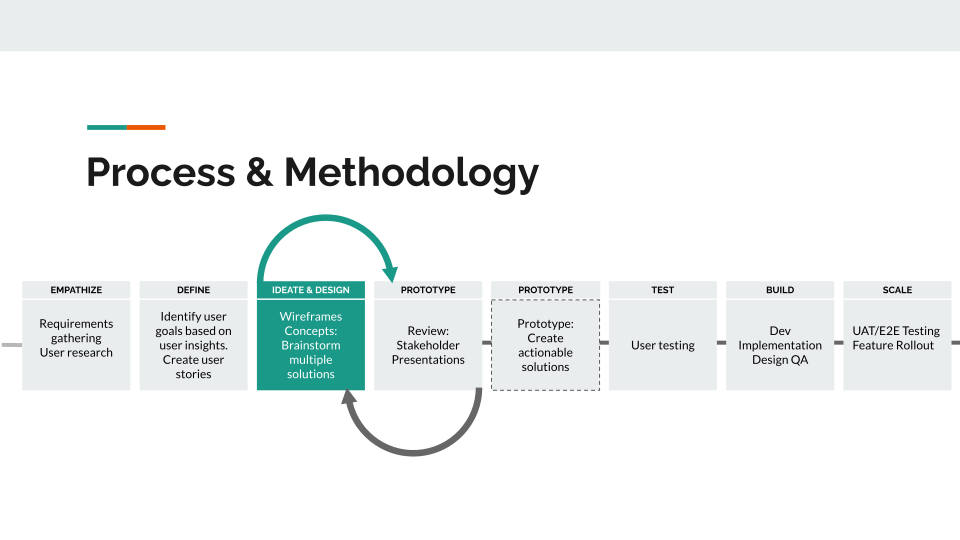
            </div><br>
            <h2 class="sub-head">Research & Discovery</h2>
            <p>
              Conducted interviews with sales reps, regional managers, and operations to map the end-to-end renewal journey and created personas. Key pain points included redundant data entry, unclear pipeline visibility, and no proactive notifications for expiring contracts.
            </p>
          <div class="mySlides">
            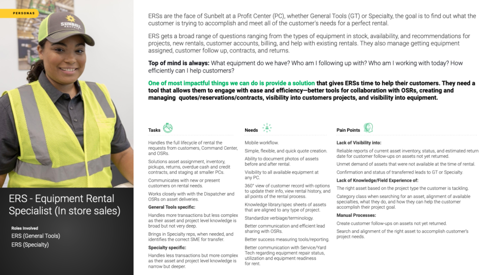
          </div><br>
          <div class="mySlides">
            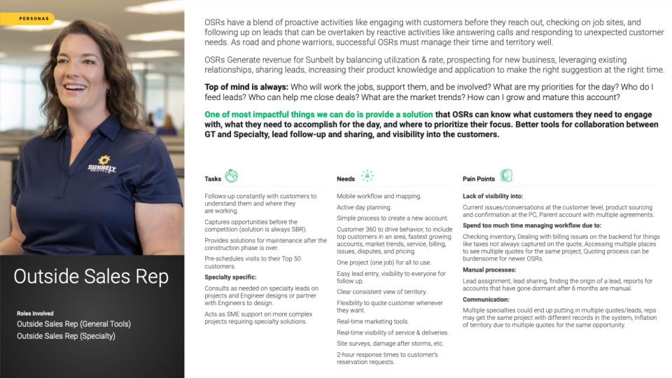
          </div>><br>
        <div class="content-child">
          <h2 class="sub-head">Design Phase</h2>
         <p><span class="strong">Sample of my deliverables for Design Phase:</span> This includes Information Architechture Site Map, Style Guides, Wireframes and High Fidelity Prototye.</p>
          <div class="content-child">
            <h2 class="sub-head">Information Architecture/Flow</h2>
            <p>
              To create a user-friendly and intuitive information architecture, I leveraged card sorting to understand how users naturally categorize and organize content. The process involved both open and closed card sorting sessions, allowing participants to either define their own categories or sort content into predefined groups.
            </p>
            <div class="mySlides">
              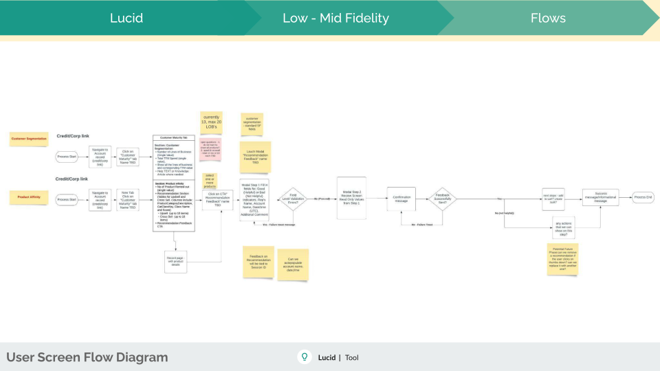
            </div>
          </div>
          <div class="content-child">
            <h2 class="sub-head">Low-Medium Fidelity Wireframes</h2>
            <p>
              To streamline the design process and gather early user feedback, I utilized low to medium-fidelity wireframes to visualize and validate core functionalities before high-fidelity design and development.
            </p>
            <div class="mySlides">
              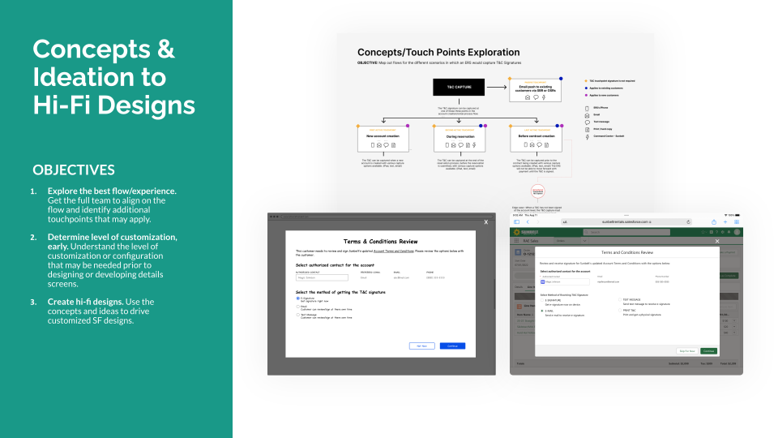
            </div><br>
            <div class="mySlides">
              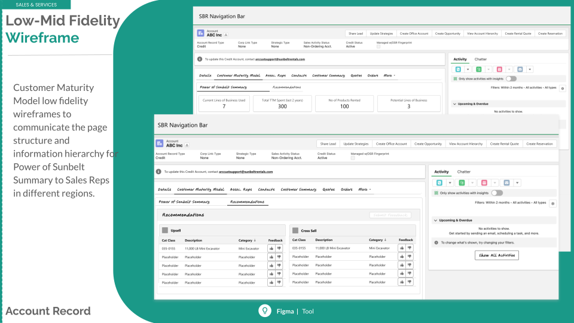
            </div><br>
            <div class="mySlides">
              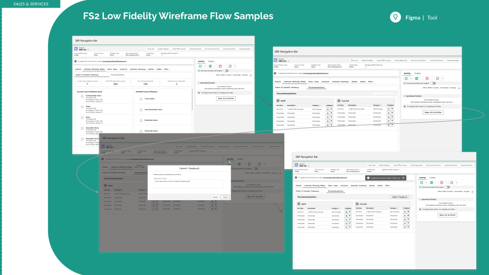
            </div>
          </div><br>
          <div class="content-child">
            <h2 class="sub-head">High Fidelity Prototype</h2>
            <p>
              To bridge the gap between design concepts and final implementation, I utilized high-fidelity prototypes to create realistic, interactive experiences that closely resembled the final product.
            </p>
            <h4><strong>Approach:</strong></h4>
            <ol class="list-style">
                <li><span class="strong">Pixel-Perfect Designs:</span> Created visually polished screens using tools like Figma and Adobe XD, ensuring brand consistency and adherence to design guidelines.</li>
                <li><span class="strong">Interactive Prototyping:</span> Added clickable interactions and transitions to simulate real user workflows, providing an accurate representation of the final product.</li>
                <li><span class="strong">User Testing & Validation:</span> Conducted usability tests with stakeholders and end-users to assess ease of use, navigation, and task completion efficiency.</li>
                <li><span class="strong">Stakeholder Buy-In:</span> Presented interactive prototypes to executives, product managers, and developers to align on design intent and functionality.</li>
                <li><span class="strong">Handoff to Development:</span> Provided detailed design specs, style guides, and component documentation, ensuring seamless implementation by the development team.</li>
            </ol>
            <br>
            <div class="mySlides">
              
            </div> <br>
            <div class="mySlides">
              
            </div> <br>
            <div class="mySlides">
              
            </div> <br>
            <div class="mySlides">
              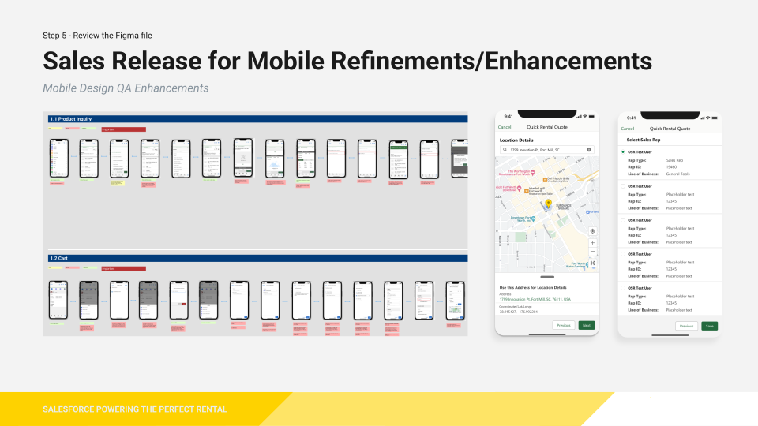
            </div> <br>
            <div class="mySlides">
              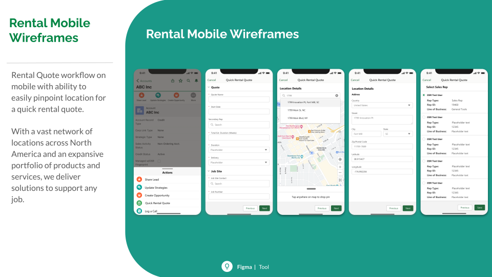
            </div> <br>
            <h4>Result and Impact</h4>
            <ol class="list-style">
                <li><span class="strong">Enhanced User Feedback:</span> Allowed users to interact with a near-final experience, leading to more actionable insights.</li>
                <li><span class="strong">Reduced Development Risks:</span> Minimized ambiguity, ensuring developers had a clear vision of interactions and UI behavior.</li>
                <li><span class="strong">Stronger Stakeholder Alignment:</span> Facilitated better decision-making by showcasing realistic designs rather than static mockups.</li>
                <li><span class="strong">Faster Time-to-Market:</span> Enabled early iteration and refinement, preventing costly changes during development.</li>
            </ol>
            <div class="mySlides">
              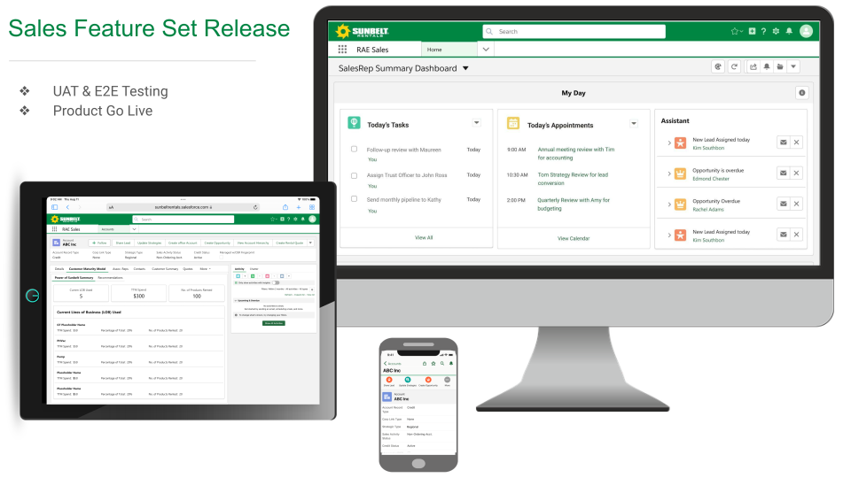
            </div> <br>
          </div>
          <div class="back-container">
            <a href="case-studies.html" class="case-studies-back-button">
               < Back to Portfolio Case Study List
            </a>
          </div>
        </div>
          
    </div> 
    <br>
   

      <!-- <a class="mybutton" href="https://www.jmcleod.me/images/resume-branding.pdf" target="_blank"> View Resume Brand</a> -->

  </div> 


</article>


